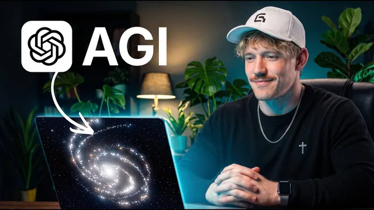

GPT-6 Astra가 드디어 컴퓨터 조작을 해냈다

원본 영상 보기 →
- API·MCP가 없는 도구도 이제 자동화 대상이에요
- '만들기'에서 '사람처럼 테스트하기'로 범위가 넓어졌어요
- 컴퓨터 조작은 최후의 수단이에요
한 줄 요약
ChatGPT가 API나 MCP 없이도 브라우저·데스크톱 앱·스마트폰을 직접 조작하게 됐어요. Jack이 디자인 변형 생성, Premiere Pro 편집, 자사 앱 사용성 테스트, 웹사이트 이미지 삽입, 폰 미러링 인스타그램 분석까지 5가지 사례로 보여 주면서 "언제 이걸 써야 하는가"의 판단 기준까지 정리합니다.
전체 내용 정리
API도 MCP도 없이 컴퓨터를 조작해요
Jack은 ChatGPT가 이제 컴퓨터를 전에 없던 수준으로 조작한다고 말합니다. 엔비디아 창업자 젠슨 황, 그리고 AGI라는 용어를 만든 사람까지 이걸 AGI라고 부른다는 거예요.
핵심은 이겁니다. 이제 API나 MCP가 없어도 무엇에든 연결할 수 있어요. 내 컴퓨터 위에서 돌아다니는 창의적 지능이 생긴 거고, 이전에 없던 새로운 활용이 열립니다.
AGI의 정의에 대해서도 짚어요. 처음엔 미래적이고 거창하게 들렸지만 결국 "사람이 컴퓨터 앞에서 할 수 있는 대부분의 일을 한다"는 뜻이고, 지금이 그 단계라고 정리합니다.
사례 1: 연결 수단 없는 사이트에서 자료 긁어 변형 생성
Jack이 디자인 영감을 얻을 때 자주 쓰는 사이트가 있는데 MCP도 API도 없어요. 원래는 직접 들어가 검색하고 수동으로 자료를 봐야 합니다.
이제는 이렇게 시킵니다. "이 사이트로 가서 검색으로 멋진 포스터 3개를 찾고, 내 Higgs Field 연결로 잉글리시 스프링어 스패니얼 관련 대안 3개를 생성해 줘." 결과로 'born to spring', 'a sunlit scrapbook', 'the porcelain' 같은 시안이 나왔어요.
또 친구 Nick과 운영하는 팟캐스트의 유튜브 분석 수치가 궁금한데 계정 접근 권한이 없어도, ChatGPT가 브라우저 안에서 알맞은 통계와 설정을 찾아 줍니다.
이게 중요한 이유가 있어요. 그 사이트는 무료 계정에서 스크롤이 제한돼 전체를 볼 방법이 없는데, 이 방식은 그 벽을 넘습니다.
사례 2: Premiere Pro를 직접 열어 b-roll 삽입
ChatGPT는 Premiere Pro를 비롯한 컴퓨터의 어떤 앱이든 직접 열어 작업해요.
Jack은 이렇게 시켰습니다. "Premiere Pro를 열고, 데스크톱에 저장해 둔 GPT-6 Astra 영상을 불러와, 첫 10~15초 중 한 지점을 골라, Higgs Field 영상 생성으로 5초짜리 b-roll을 만들어 삽입하고, 끝나면 검토하게 알려 줘."
ChatGPT는 스스로 그 영상을 찾고 Premiere Pro를 열어 구간을 식별했고, 가장 강한 삽입 지점을 정한 뒤 Seed Dance 2.5로 b-roll을 생성했어요.
Higgs Field는 최고 수준의 이미지·영상 생성 모델을 한 곳에서 쓰는 플랫폼이고 Codex에 쉽게 연결됩니다. Premiere Pro에는 이런 통합 기능이 없는데도 ChatGPT가 컴퓨터에서 파일 위치를 뒤져 가며 타임라인에 얹어 줘요.
Jack은 지난 스타트업에서 배운 원칙을 인용합니다. "우리는 너와 함께 자동화하거나, 너를 통해 자동화한다." 예전엔 협업사마다 API 연결이 있는 게 아니었는데, 이 기술이면 그게 늘 필요하진 않다는 거예요.
그는 "손에 넣은 뒤로 계속 써 봤는데 진짜 새로운 활용이 열렸다"고 말합니다. 프롬프트를 제대로 안 주고 "뭔가 찾아서 넣어 줘"만 했는데도 나쁘지 않았고, 제대로 된 시스템을 주면 완전히 다른 수준까지 간다고 봐요. 포토샵에서 색 보정 등도 같은 방식으로 됩니다.
사례 3~4: 사람처럼 테스트하고, 생성물을 화면에 끼워 넣기
사례 3은 테스트예요. Jack은 자기 스타트업 중 하나인 음성 받아쓰기 앱을 대상으로 "Codex 브라우저로 사이트에 가서 앱을 다운로드해 보고 거기서 멈춘 뒤, 그 사용자 여정에 대한 피드백을 달라"고 시켰습니다.
'만드는 것'에서 '사람처럼 테스트하는 것'으로 넘어갈 수 있다는 게 큰 차이예요.
ChatGPT는 UI 전체를 훑고 커서로 다운로드 버튼을 찾다가 계정 생성을 요구받았고, "무료 다운로드가 다운로드를 시작하는 대신 계정 생성 페이지를 연다"는 첫 마찰 지점을 짚어냈어요. 이어 도움말과 문서를 뒤져 직접 설치 파일이 있는지 확인했고요.
Jack은 예전 computer use를 "영상을 콧수염 없이 시작했는데 끝나니 콧수염이 나 있었다"고 할 만큼 느렸다고 표현하는데, 지금은 비교가 안 되게 빠릅니다.
사례 4는 생성물을 웹사이트에 끼워 넣는 것이에요. 지난 영상에서 만든 웹사이트에 새 이미지를 넣고 싶다면, URL을 주고 "이 사이트를 훑어보고 내 프로필 사진을 가져와 배경만 바꾼 변형을 만들어 하단 사진 자리에 통합하고, 어디에 두는 게 나은지 의견도 달라"고 시킵니다.
결과로 사이트 하단 왼쪽에 배경을 바꾼 사진이 사이트의 디자인 톤에 맞게 선명하게 들어갔어요. ChatGPT는 컴퓨터 조작, 생성, 검토 능력을 겹쳐 쌓을 때 가장 강력합니다.
사례 5: 스마트폰까지 조작해요
ChatGPT는 내장된 phone mirroring 앱으로 스마트폰도 조작합니다.
"폰 미러링 앱으로 Instagram을 열고 지난 한 달 분석을 확인해, 개선할 점에 대한 관찰과 인사이트를 알려 줘" 같은 지시가 가능해요.
인스타그램은 3초 시청자 수 같은 통계를 API로 노출하지 않을 수 있지만, ChatGPT가 앱 안을 직접 들여다봅니다. 그의 아이폰에 연결해 인스타그램을 열고 설정을 확인했고, 어디 있는지 모르는 설정도 찾아 줘요.
이런 흐름은 workflow로 짜서 skill로 만들어 반복 사용할 수 있습니다.
사용량도 짚어요. 예산은 모델·추론·컨텍스트·도구에 따라 달라지고, 짧은 프롬프트도 길고 비싼 워크플로우를 촉발할 수 있습니다. 가장 효과적인 절약법은 한 창에서 작업 하나를 끝내면 새 창을 여는 것이에요.
언제 써야 할까요 — 판단 순서
Jack이 판단용 차트를 만들었습니다.
- 이 작업을 자동화해야 하는가? 그 전에 더 중요한 질문은 "애초에 내가 이걸 해야 하는가?"예요.
- 그렇다면 "CLI나 MCP로 처리 가능한가?" 가능하면 그쪽이 더 빠르고, 더 안정적이고, 대체로 더 쌉니다.
- 불가능하고 꼭 해야 하는 일이라면, 그때 이 컴퓨터 조작으로 인터페이스의 빈틈을 메웁니다.
핵심 인사이트
- API·MCP가 없는 도구도 이제 자동화 대상이에요: 그동안 "연결 수단이 없어서" 자동화에서 빠졌던 사이트와 앱(무료 계정 제한, 폐쇄형 대시보드, 레거시 프로그램)을 사람이 화면을 쓰듯 조작해 끌어들일 수 있습니다. Jack의 표현대로 "함께 자동화하거나, 너를 통해 자동화한다"예요.
- '만들기'에서 '사람처럼 테스트하기'로 범위가 넓어졌어요: 자사 앱 온보딩을 사용자 눈으로 클릭해 보고 첫 마찰 지점을 글로 보고받는 활용은, 이전엔 시간이 너무 걸려 불가능했습니다.
- 컴퓨터 조작은 최후의 수단이에요: 애초에 할 일인가 → CLI·MCP로 되는가 → 안 되면 그때 화면 조작. CLI와 MCP가 더 빠르고 안정적이고 저렴하니, 컴퓨터 조작은 인터페이스의 빈틈을 메우는 다리로만 쓰세요.
오늘 당장 해볼 것
- 지금 외주나 직원이 반복하는 업무 중 "그 서비스에 연동이 없어서" 자동화를 포기했던 것 3개를 적어 보세요. 이제는 화면 클릭하듯 조작하는 방식으로 가능한지 물어볼 목록이 됩니다.
- 자사 웹사이트나 예약 페이지의 '첫 화면부터 가입·결제까지'를 제3자에게 시켜 보고 어디서 막히는지 한 문장씩 받아 보세요. 직접 못 하면 업체에 "가입 여정을 사람처럼 클릭해 보고 마찰 지점을 리포트해 달라"고 요청하시고요.
- 새 자동화를 의뢰하기 전에 세 가지 질문을 순서대로 던져 보세요. 이 일을 우리가 계속 해야 하나, 표준 연동으로 되나, 안 되면 화면 조작으로 메울 값어치가 있나.